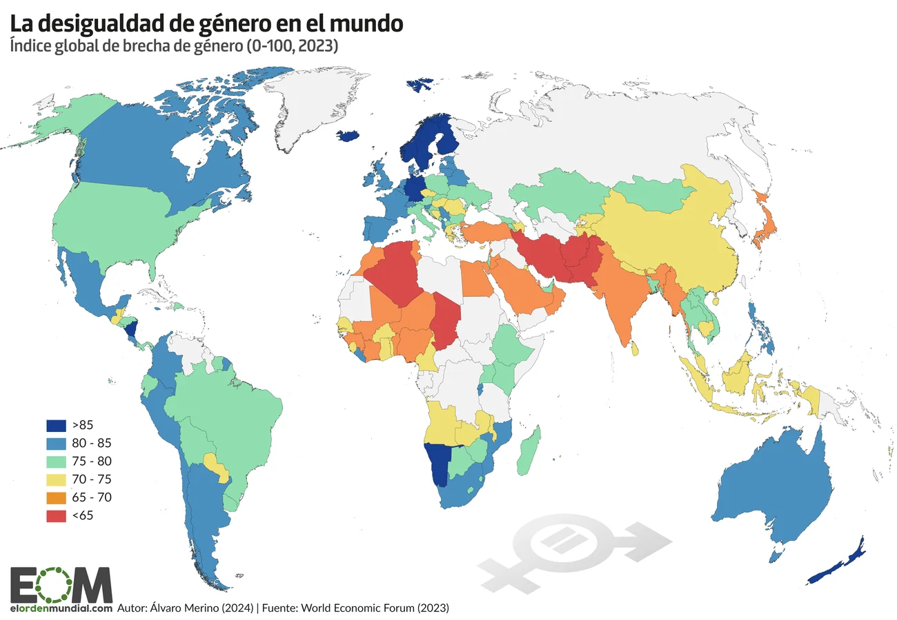

La (s) brecha (s) de género en el mundo
Analicemos este mapa de la brecha de género en el mundo:

Líderes
¿Quiénes lideran el mundo?
La inequidad en política es la más pronunciada para las mujeres.
Por ejemplo, las mujeres apenas ocupan el 22,9 % de las representaciones parlamentarias.
Otro dato curioso (o no tanto) es que un 28 % de la población mundial vive en un país en el que la jefatura del gobierno nacional está ocupada por una mujer.
Geografía
La distribución geográfica de la brecha
A nivel mundial, la región europea es la zona que más cerca se encuentra de la igualdad de género plena (76,3 %), con los países nórdicos y especialmente Islandia a la cabeza.
Los siguientes en la lista son Norteamérica (75 %), América Latina y el Caribe, Eurasia y Asia central (69 % las tres).
Luego podemos situar a Asia oriental y el Pacífico (68,8 %) y África subsahariana (68,2 %), mientras que Asia meridional (63,4 %) y Oriente Próximo y el Magreb (62,6 %) son las regiones más rezagadas.
Datos (no) curiosos
Datos a transformar
De acuerdo con la tendencia actual, la brecha de género en el mundo tardará en cerrarse 131 años.
Un dato que no sorprende si se tiene en cuenta que ni un solo país del mundo ha conseguido alcanzar todavía la igualdad plena entre hombres y mujeres, entre los que aún existe una brecha superior al 31 %.
- Azul oscuro: La brecha de género es muy chica o hay paridad.
- Azul claro: La brecha de género es mínima .
- Naranja claro: Hay una brecha moderada.
- Naranja oscuro: La brecha de género es alta, con una diferencia significativa en favor de los hombres.
- Azul oscuro: La brecha de género es mínima o hay paridad.
- Azul claro: La brecha de género es mínima.
- Naranja claro: Hay una brecha moderada.
- Naranja oscuro: La brecha de género es alta, con una diferencia significativa en favor de los hombres.